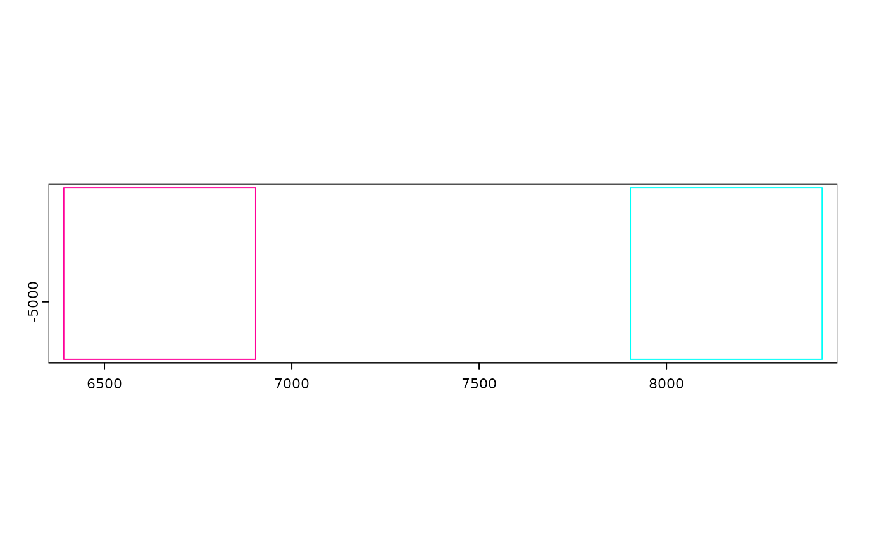

Function to join multiple giotto objects together
Usage
joinGiottoObjects(
gobject_list,
gobject_names = NULL,
join_method = c("shift", "z_stack", "no_change"),
z_vals = 1000,
x_shift = NULL,
y_shift = NULL,
x_padding = NULL,
y_padding = NULL,
dry_run = FALSE,
verbose = FALSE
)Arguments
- gobject_list
list of giotto objects
- gobject_names
unique giotto names for each giotto object
- join_method
method to join giotto objects, see details
- z_vals
distance(s) along z-axis if method is z-stack (default is step of 1000)
- x_shift
numeric vector of values to shift along x-axis if method is "shift"
- y_shift
numeric vector of values to shift along y-axis if method is "shift"
- x_padding
x padding between datasets if method is shift
- y_padding
y padding between datasets if method is shift. Only applied when y shifts are given.
- dry_run
logical. Plot expected object locations after join, but do not actually perform it.
- verbose
be verbose Preview where each gobject will be in space with bounding polygons
Details
This function joins both the expression and spatial information of
multiple giotto objects into a single one. Giotto supports multiple ways of
joining spatial information as selected through param join_method:
"shift" (default) Spatial locations of different datasets are shifted by numeric vectors of values supplied through
x_shift,y_shift,x_padding, andy_padding. This is particularly useful for data that is provided as tiles or ROIs or when analyzing multiple spatial datasets together and keeping their spatial data separate.If shift values are given then a value is needed for each giotto object to be joined in
gobject_list. Order matters.If a regular step value is desired instead of a specific list of values, use
x_paddingandy_padding. Both shift and padding values can be used at the same time.When
x_shiftisNULL, it defaults to the x range of gobjects in the list so that datasets are xshifted exactly next to each other with no overlaps. An additional defaultx_padding = 1000is applied ifx_shift,x_padding,y_shift,y_paddingare allNULL."z_stack" Datasets are spatially combined with no change to x and y spatial locations, but a z value is incorporated for each dataset based on input supplied through param
z_vals. To specify a z value for each dataset to join, a numeric vector must be given with a value for each element ingobject_list. Order matters.Alternatively, a single numeric value can be supplied to
z_valsin which case this input will be treated as a z step value."no_change" No changes are applied to the spatial locations of the datasets when joining.
Examples
# joining objects with no spatial information
m1 <- matrix(rnorm(100), nrow = 10)
m2 <- matrix(rnorm(100), nrow = 10)
colnames(m1) <- paste0("cell_", seq_len(10))
colnames(m2) <- paste0("cell_", seq_len(10))
rownames(m1) <- rownames(m2) <- paste0("feat_", seq_len(10))
g1 <- createGiottoObject(expression = m1)
#> python already initialized in this session
#> active environment : 'giotto_env'
#> python version : 3.10
#> checking default envname 'giotto_env'
#> a system default python environment was found
#> Using python path:
#> "/usr/share/miniconda/envs/giotto_env/bin/python"
#> There are non numeric or integer columns for the spatial location
#> input at column position(s): 1
#> The first non-numeric column will be considered as a cell ID
#> to test for consistency with the expression matrix
#> Other non numeric columns will be removed
g2 <- createGiottoObject(expression = m2)
#> python already initialized in this session
#> active environment : 'giotto_env'
#> python version : 3.10
#> checking default envname 'giotto_env'
#> a system default python environment was found
#> Using python path:
#> "/usr/share/miniconda/envs/giotto_env/bin/python"
#> There are non numeric or integer columns for the spatial location
#> input at column position(s): 1
#> The first non-numeric column will be considered as a cell ID
#> to test for consistency with the expression matrix
#> Other non numeric columns will be removed
joinGiottoObjects(
gobject_list = list(g1, g2),
gobject_names = c("g1", "g2")
)
#> An object of class giotto
#> >Active spat_unit: cell
#> >Active feat_type: rna
#> dimensions : 10, 20 (features, cells)
#> [SUBCELLULAR INFO]
#> [AGGREGATE INFO]
#> expression -----------------------
#> [cell][rna] raw
#> spatial locations ----------------
#> [cell] raw
#>
#>
#> Use objHistory() to see steps and params used
# dry run joining objects with spatial information
# a default x_padding of 1000 is applied
viz <- GiottoData::loadGiottoMini("viz")
#> 1. read Giotto object
#> 2. read Giotto feature information
#> 3. read Giotto spatial information
#> 3.1 read Giotto spatial shape information
#> 3.2 read Giotto spatial centroid information
#> 3.3 read Giotto spatial overlap information
#> 4. read Giotto image information
#> python already initialized in this session
#> active environment : 'giotto_env'
#> python version : 3.10
#> checking default envname 'giotto_env'
#> a system default python environment was found
#> Using python path:
#> "/usr/share/miniconda/envs/giotto_env/bin/python"
joinGiottoObjects(
list(viz, viz),
gobject_names = c("v1", "v2"),
dry_run = TRUE
)

# place them right next to each other
# note that this means generated spatial networks will be more likely to
# link across the datasets
joinGiottoObjects(
list(viz, viz),
gobject_names = c("v1", "v2"),
dry_run = TRUE,
x_padding = 0
)
# join the spatial objects
joined_viz <- joinGiottoObjects(
list(viz, viz),
gobject_names = c("v1", "v2")
)
#> Warning: spatial locations have been modified.
#> Relevant spatial networks may need to be
#> regenerated
#> Warning: spatial locations have been modified.
#> Relevant spatial networks may need to be
#> regenerated
#> Warning: spat_unit: z1 spatloc name: raw
#> cell IDs in spatial locations are missing from spatial
#> polygon info
#> Warning: spat_unit: aggregate spatloc name: raw
#> cell IDs in spatial locations are missing from spatial
#> polygon info